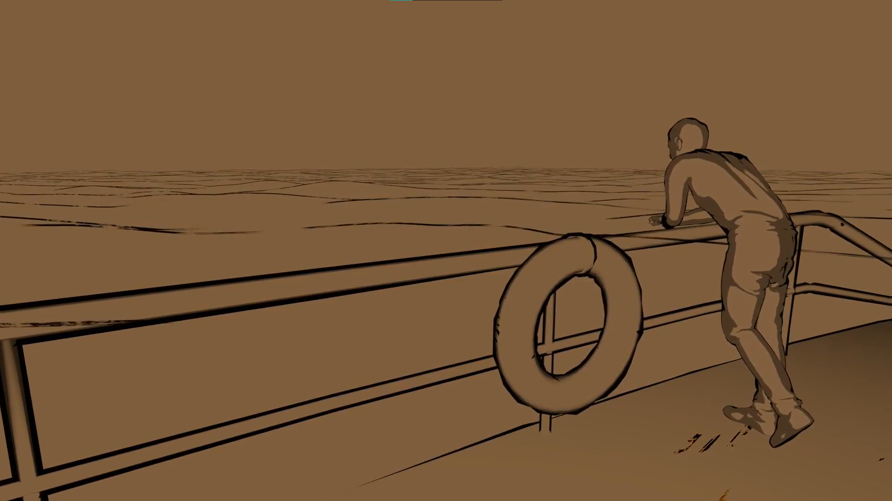

Das Video zeigt einen Prototypen der ersten Szene.

Das Storyboard
Paul Denker
erzählt die Geschichte der DGzRs
Dieses Projetk entstand in Kooperation mit der Hochschule für Künste und dem Focke Museum Bremen.
Zum Anlass des Rettungsschiffes Paul Denker sollte im Focke Museum eine VR Anwendung entstehen und im Rahmen eines
Kurses an der HfK habe wir mehrere Prototypen für das Museum entwickelt.
Für mein Projekt habe ich mir überlegt die Geschichte der DGzRS, dessen Organisation das Schiff angehört, sowie des
Seenotretters Paul Denker, zu erzählen.
Die Idee
Während der Ideenfindung habe ich erst einmal viel zu Paul Denker und der DGzRS recherchiert und interessante Aspekte zusammengetragen. Schließlich habe ich mich dazu entschieden, mit meinem Projekt die Entstehung, sowie einige weitere entscheidende Ereignisse der DGzRS narrativ in VR darzustellen. Die Ereignisse sollen in Form von kurzen Szenen gezeigt werden. Es gibt keine Interaktion von dem Anwender, allerdings gibt es einen Erzähler, der den Betrachter direkt anspricht. Somit wird doch der Anschein erweckt Teil des Gesehenen zu sein. Die einzelnen Szenen sollen einen gezeichneten Stil, mit wenig Bewegung haben. Setzt der Betrachter die VR Brille auf, soll er das Gefühl bekommen, sich in einer Zeichnung zu befinden. Ich habe mich für diese Gestaltung entschieden um ein Nostalgisches Gefühl zu vermitteln und um das Risiko einer Überforderung und von Motion Sickness bei den potentiell VR-unerfahrenen Museumsbesuchern so gering wie möglich zu halten.
Die Umsetzung
Die größte Herausforderung war es, die 3D Objekte gezeichnet aussehen zu lassen. Ich habe viel recherchiert und experimentiert und mich schließlich dazu entschieden einen Shadergraph in Blender zu erstellen. Für meinen Prototypen habe ich fürs erste freie Assets verwendet. Ich habe verschiedene Möglichkeiten ausprobiert. Der gesamte Prozess, bis ich mit meinem Shader einigermaßen zufrieden war hat wohl die meiste Zeit in Anspruch genommen. Um den Prototypen zu erstellen, habe ich dann noch eine Weile am Sound und an der Animation gearbeitet.
Die Story
Parallel habe ich weitere Informationen zu der DGzRS zusammen getragen, mir überlegt, wie genau ich die Geschichte darstellen möchte und ein Storyboard erstellt. Setzt der Besucher die VR Brille auf, soll sich um ihn herum als erstes die Adolph Bermpohl zeichnen. Die Adolph Bermpohl war ebenfalls ein DGzRS Schiff, welches 1967 während eines Orkans Schiffbruch erlitt. Dabei verloren die Besatzungsmitglieder des Schiffes, sowie die kurz zuvor geretteten Fischer ihr Leben. Vormann des Rettungsschiffes war Paul Denker. Der Betrachter bekommt Zeit sich etwas auf dem Schiff umzusehen und wird dann von einem Seemann begrüßt, der sich als Paul Denker vorstellt. Paul Denker erzählt wie die DGzRS entstanden ist und entsprechend zu seinen Erzählungen, ändert sich die Umgebung um einen herum zu dem jeweiligen Ort des Ereignisses. Nach der Erzählung zu der DGzRS befindet sich der Betrachter wieder gemeinsam mit Paul Denker auf der Adolph Bermpohl. Inzwischen stürmt es gewaltig. Paul Denker sagt einem es hätte gerade einen Notfall gegeben und sie würden nun auf Seenotrettungseinsatz fahren. Der Betrachter wird nun mit auf diesen Rettungseinsatz genommen. Man sieht wie drei Fischer von der Besatzung der Adolph Bermpohl gerettet werden und es wird begonnen, sich wieder auf den Rückweg zu machen. Kurz nachdem alle gerettet sind kommt es jedoch erneut zum Unglück, welches der Betrachter allerdings nur durch kurze Ausschnitte erahnen kann. Am Ende wird noch eine Erklärung zu dem Gesehen gezeigt.